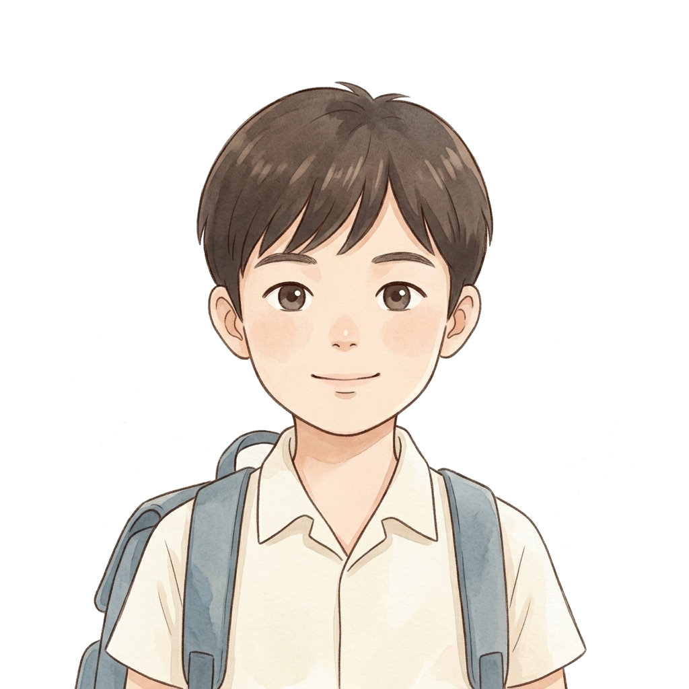
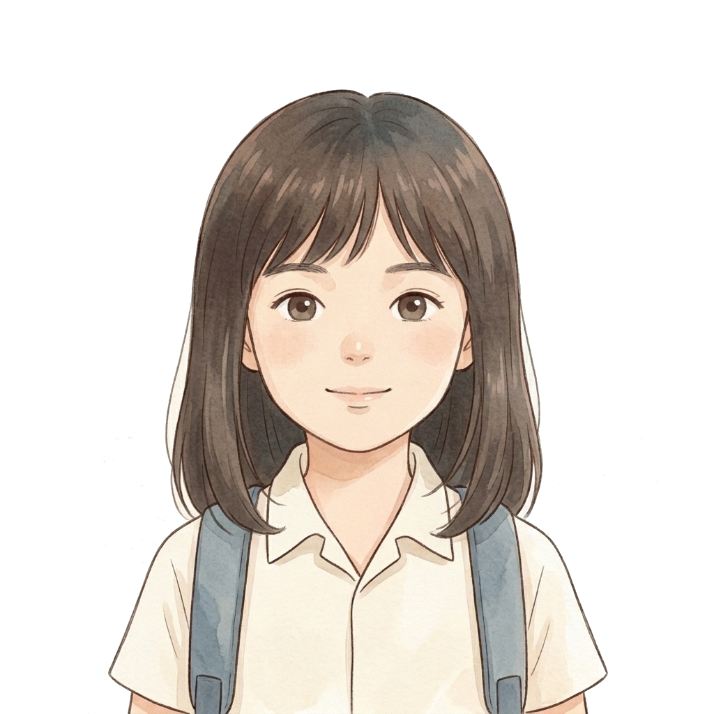
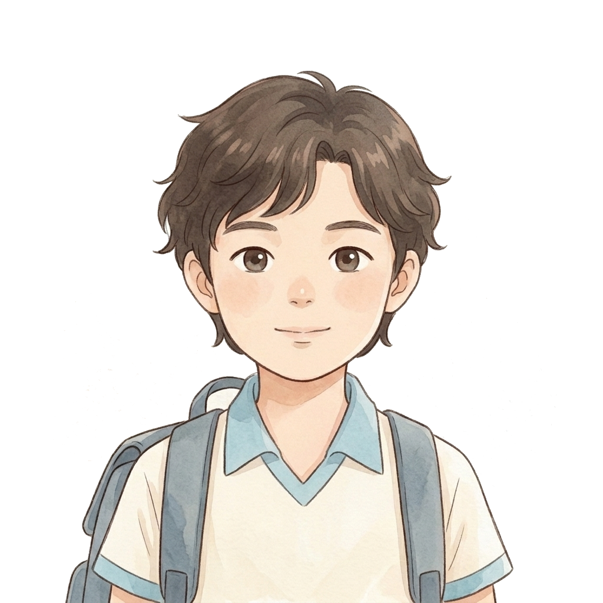
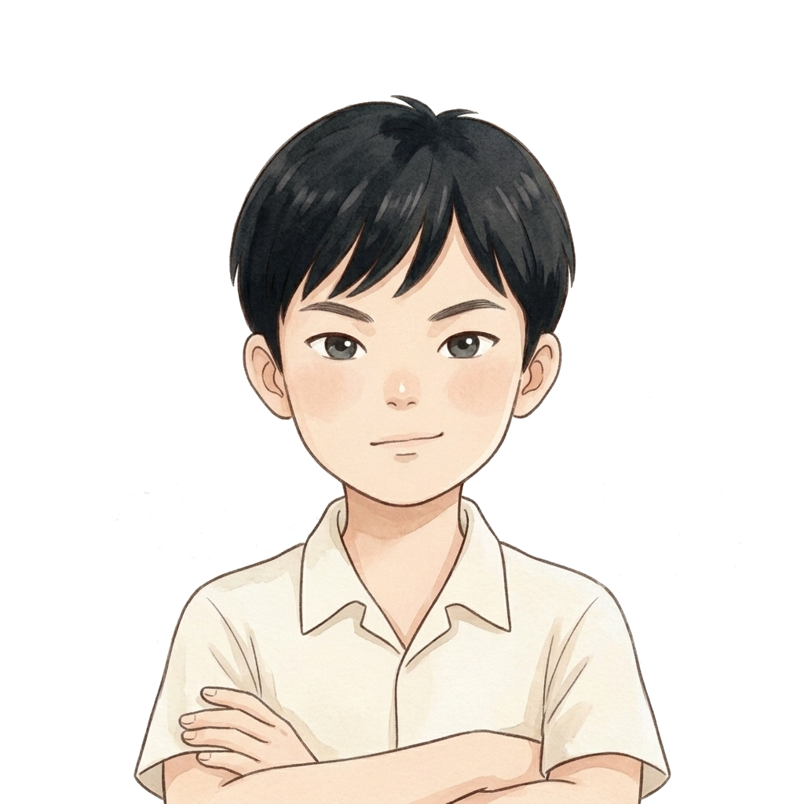

受凌者主線・校園人際與情緒覺察互動探索遊戲
三個角色劇情與數值完全一致，請選擇最符合你心境的外觀造型




「先坐下來，我們一起慢慢呼吸。你已經很努力了。」
你在面對同儕困境時展現了勇氣，尋求值得信任的師長支援，重獲安全感與人際信任。
✦ 教育目標：專為國小中高年級設計之校園探索遊戲，引導受凌學生在面對同儕壓力、言語嘲弄與孤立時，學習非暴力因應、自我情緒調節與尋求信任大人協助。
✦ 零資安風險保證：本遊戲為 100% 純前端靜態程式，不蒐集任何姓名、帳號或個人機敏資料，無病毒與惡意腳本，所有進度僅儲存於本地瀏覽器。
✦ 操作方式：鍵盤 W/A/S/D 或 方向鍵移動，靠近物件或同學按 [E] 或 [空白鍵] 互動；支援手機平板觸控。
收拾好書包，回家好好休息。
玩完今天的這段經歷，請點選一個最符合你今天感受的表情：